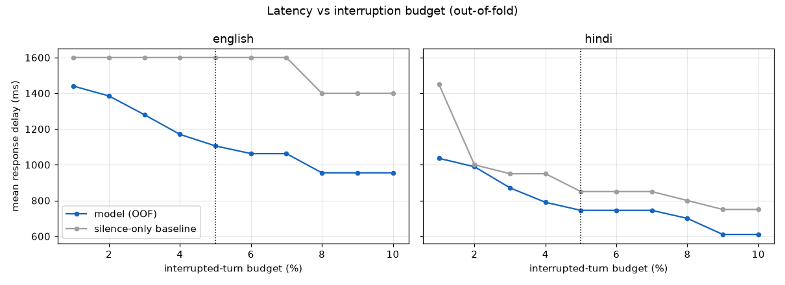
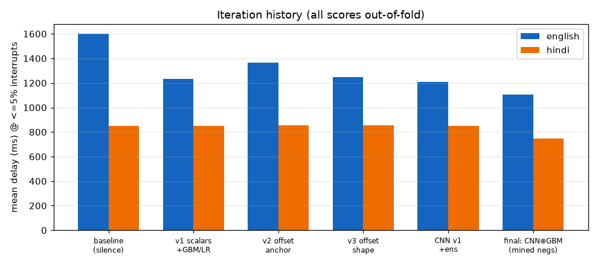
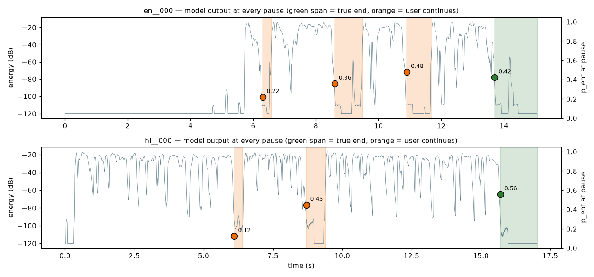

Plivo ML assignment · roll 24BT10010 · STT track · all scores are out-of-fold (models never scored a turn they trained on)
A voice agent must decide at every pause: is the caller done, or just thinking? The baseline every production VAD uses — wait for N ms of silence — needs N ≈ 1600 ms on the English data to keep interruptions under 5%, because mid-turn hesitations routinely last a second or more (English hold pauses: p95 = 1.8 s). Every one of those 1600 ms is dead air the caller hears after they finished speaking. Our model reads how the speech stopped, not just that it stopped, and takes the floor in a fraction of that.
| system | english delay ⬇ | english AUC | hindi delay ⬇ | hindi AUC |
|---|---|---|---|---|
| silence-only baseline (given) | 1600 ms | 0.514 | 850 ms | 0.501 |
| tabular models (42 causal prosody/structure features, cost-weighted) | 1222 ms | 0.686 | 808 ms | 0.743 |
| final: CNN (mel+F0, mined negatives) ⊕ tabular | 1105 ms | 0.738 | 745 ms | 0.810 |
Inference cost: 248 pause decisions in 17 s on a laptop CPU including model load — ~55–70 ms per decision, comfortably real-time for a live agent.


pause_start trails the acoustic
offset by a ~110 ms VAD hangover (we measured it: the last 100 ms before
pause_start sit ~44 dB below speech). All windows end at the detected offset.
Plotting turns showed the discriminative pattern directly: holds cut off sharply — energy drops from full speech level straight into the floor mid-phrase — while true ends decay gradually, often with a trailing breath or an unstressed final syllable, and a pitch fall into the offset. Hindi hesitations are shorter and more often filled (flat-pitch vowel), which is why a plain silence timer already does 850 ms there and why the pitch-flatness and offset-shape features carry more of the Hindi signal. The remaining errors are mostly semantic: utterances that are prosodically final but syntactically incomplete (and vice versa) — separating those needs lexical content, which the rules (correctly) deny us: no ASR, no pretrained models. That is the plateau.
predict.py was smoke-tested on a fresh folder copy at a different path (incl. a
variant with label/pause_end columns stripped) and on five
pathological folders: a pause 0.3 s into the file, a wav shorter than the 2 s
window, scrambled row order, a missing wav (row falls back to the class prior instead of
crashing), and unknown extra columns — all produce complete predictions.pause_start; the current
pause's duration and label are never read. Enforced in one place per model
(features_eot.pause_features, train_cnn.make_window).RUNLOG.md in brief: eleven scored runs. Silence baseline (1600/850 ms) → scalar prosody
(−350 ms EN, Hindi unmoved) → plotting turns revealed the real cue (sharp cut vs gradual
decay) and a ~110 ms annotation hangover → CNN on mel+F0 with 882 mined micro-gap negatives
broke Hindi through its baseline → deployment-aligned cost weighting improved the tabular models
(and hurt the CNN — measured, rolled back where it hurt) → final ensemble. Three negative results
are documented with the reason they failed, because that is what an honest search looks like.
NOTES.md in brief: the signal is offset shape + speaker-relative pitch finality + turn
structure; the plateau is informational — the remaining errors need the words, and pretrained
ASR is (rightly) against the rules.
| decision / work | who |
|---|---|
| Track choice, "act like the evaluator" strategy, push for a stronger-than-first-pass solution, library-compliance audit request, final quality bar | human |
| Listening to the worst error clips and describing what they contain (hesitation vs. finality cues) | human (notes in RUNLOG) |
| Metric analysis (what the scorer actually optimizes), causality design, feature engineering, offset-anchoring diagnosis, micro-gap mining idea, CNN architecture + augmentation, OOF/transfer evaluation harness, all code, figures, this report | coding agent (Claude Fable), direction and acceptance by human |
| Every scoring run logged with what changed and why (see RUNLOG.md) — including the two ideas that made things worse (v2 anchor-only, GBM+mined) and were rolled back | joint |
predict.py (inference CLI) · features_eot.py · train_model.py ·
train_cnn.py · model.pkl/model_cnn.pt ·
RUNLOG.md (full iteration log) · NOTES.md ·
predictions_english.csv/predictions_hindi.csv ·
make_figures.py (report images only — matplotlib is not in the model pipeline).